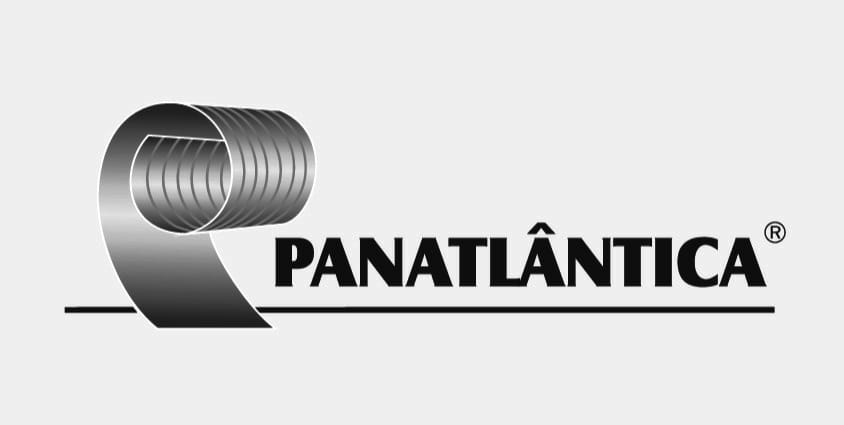
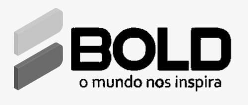

Aço, matérias-primas, negociação B2B — e agora os sistemas que tornam essa operação mais inteligente.
Passei mais de duas décadas trabalhando com algumas das principais distribuidoras de matérias-primas do Brasil, tendo o aço como produto central. Meu papel principal foi conduzir negociações comerciais de fornecimento, identificar clientes, construir relacionamentos e criar condições para parcerias de longo prazo.
Nesse período, mapeei e desenvolvi mais de 1.000 empresas consumidoras desses materiais no Sul do Brasil. Ajudei essas empresas a formar relações duradouras baseadas em confiança e em uma compreensão real das dinâmicas de mercado.
Esse trabalho nunca foi apenas transacional. Ele exigiu compreender o ciclo produtivo de cada cliente, suas necessidades por diferentes materiais, restrições de caixa, expectativas de fornecimento e urgências comerciais. Essa profundidade de entendimento é o que tento transformar em sistemas.


Projetos reais, stacks reais, em produção ou desenvolvimento ativo.
Tenho interesse em projetos que combinem conhecimento de negócio, dados e software para criar impacto operacional real.